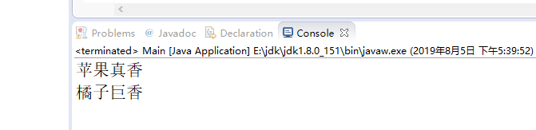
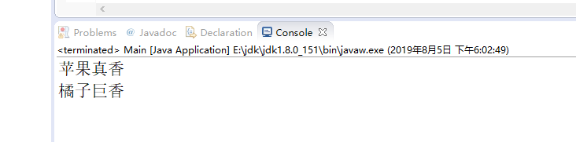

<!DOCTYPE html>
<html>
<head><meta name="generator" content="Hexo 3.9.0">
  <meta charset="utf-8">
  
  <!-- 深入理解：java的三种工厂模式 | Zesystem&#39;blog -->
  <title>Zesystem's  Space</title>
  <meta name="viewport" content="width=device-width, initial-scale=1, maximum-scale=1">
  <meta name="keywords" content="This is Zesystem's blog.">
  <!-- 
  
    <meta name="keywords" content="MinHow,MinHow's Blog" />
    -->
  <meta name="description" content="工厂模式！！！">
<meta name="keywords" content="简单工厂模式,工厂方法模式,抽象工厂模式">
<meta property="og:type" content="article">
<meta property="og:title" content="深入理解：java的三种工厂模式">
<meta property="og:url" content="https://zesystem.github.io/2019/08/05/深入理解：java的三种工厂模式/index.html">
<meta property="og:site_name" content="Zesystem&#39;blog">
<meta property="og:description" content="工厂模式！！！">
<meta property="og:locale" content="default">
<meta property="og:image" content="https://zesystem.github.io/2019/08/05/深入理解：java的三种工厂模式/20190805174001239.png">
<meta property="og:image" content="https://zesystem.github.io/2019/08/05/深入理解：java的三种工厂模式/20190805180407727.png">
<meta property="og:updated_time" content="2019-08-05T15:02:14.451Z">
<meta name="twitter:card" content="summary">
<meta name="twitter:title" content="深入理解：java的三种工厂模式">
<meta name="twitter:description" content="工厂模式！！！">
<meta name="twitter:image" content="https://zesystem.github.io/2019/08/05/深入理解：java的三种工厂模式/20190805174001239.png">
  
  
    <link rel="icon" href="/favicon.ico">
  
  <link href="//cdn.bootcss.com/font-awesome/4.7.0/css/font-awesome.min.css" rel="stylesheet" type="text/css">
  <link rel="stylesheet" href="/css/style.css">
  <script src="/js/pace.min.js"></script>
  

  
	<script>
	var _hmt = _hmt || [];
	(function() {
	  var hm = document.createElement("script");
	  hm.src = "//hm.baidu.com/hm.js?true";
	  var s = document.getElementsByTagName("script")[0]; 
	  s.parentNode.insertBefore(hm, s);
	})();
	</script>

  
  <div style="display: none;">
    <script src="//s22.cnzz.com/z_stat.php?id=true&web_id=true" language="JavaScript"></script>
  </div>


</head>
</html>
<body>
  <div id="container">
      <header id="header">
    <div id="banner"></div>
    <div id="header-outer">
        <div id="header-menu" class="header-menu-pos animated">
            <div class="header-menu-container">
                <a href="/" class="left">
                    <span class="site-title">Zesystem</span>
                </a>
                <nav id="header-menu-nav" class="right">
                    
                    <a  href="/">
                        <i class="fa fa-home"></i>
                        <span>我的家</span>
                    </a>
                    
                    <a  href="/archives">
                        <i class="fa fa-archive"></i>
                        <span>干货s</span>
                    </a>
                    
                    <a  href="/about">
                        <i class="fa fa-user"></i>
                        <span>关于me</span>
                    </a>
                    
                </nav>
                <a class="mobile-header-menu-button">
                    <i class="fa fa-bars"></i>
                </a>
            </div>
        </div>
        <div id="header-row">
            <div id="logo">
                <a href="/">
                    
                </a>
            </div>
            <div class="header-info">
                <div id="header-title">
                    
                    <h2>
                        Zesystem
                    </h2>
                    
                </div>
                <div id="header-description">
                    
                    <h3>
                        不平凡的人生需要走不平凡的路
                    </h3>
                    
                </div>
            </div>
            <nav class="header-nav">
                <div class="social">
                    
                        <a title="CSDN" target="_blank" href="https://blog.csdn.net/weixin_44588495">
                            <i class="fa fa-home fa-2x"></i></a>
                    
                        <a title="Github" target="_blank" href="https://github.com/Zesystem">
                            <i class="fa fa-github fa-2x"></i></a>
                    
                        <a title="2502266520"  ">
                            <i class="fa fa-qq fa-2x"></i></a>
                    
                </div>
            </nav>
        </div>
    </div>
</header>
      <div class="outer">
        <section id="main" class="body-wrap"><article id="post-深入理解：java的三种工厂模式" class="article article-type-post" itemscope itemprop="blogPost">
  <div class="article-inner">
    
      <header class="article-header">
        
  
    <h1 class="post-title" itemprop="name">
      深入理解：java的三种工厂模式
    </h1>
    <div class="post-title-bar">
      <ul>
          
              <li>
                  <i class="fa fa-book"></i>
                  
                      <a href="/categories/设计模式/">设计模式</a>
                  
              </li>
          
        <li>
          <i class="fa fa-calendar"></i>  2019-08-05
        </li>
        <li>
          <i class="fa fa-eye"></i>
          <span id="busuanzi_value_page_pv"></span>
        </li>
      </ul>
    </div>
  

          
      </header>
    
    <div class="article-entry post-content" itemprop="articleBody">
      
            
            <p>工厂模式！！！</p>
<a id="more"></a>
<h3 id="1、简单工厂模式"><a href="#1、简单工厂模式" class="headerlink" title="1、简单工厂模式"></a>1、简单工厂模式</h3><h4 id="描述"><a href="#描述" class="headerlink" title="描述"></a>描述</h4><ul>
<li><p>简单工厂的定义：提供一个创建对象实例的功能，而无须关心其具体实现。被创建实例的类型可以是接口、抽象类，也可以是具体的类。看下面的例子。</p>
</li>
<li><p>Person接口</p>
<h4 id="代码"><a href="#代码" class="headerlink" title="代码"></a>代码</h4><figure class="highlight java"><table><tr><td class="gutter"><pre><span class="line">1</span><br><span class="line">2</span><br><span class="line">3</span><br><span class="line">4</span><br><span class="line">5</span><br></pre></td><td class="code"><pre><span class="line"><span class="keyword">package</span> factory;</span><br><span class="line"></span><br><span class="line"><span class="keyword">public</span> <span class="class"><span class="keyword">interface</span> <span class="title">Fruit</span> </span>&#123;</span><br><span class="line">	<span class="function"><span class="keyword">public</span> <span class="keyword">void</span> <span class="title">draw</span><span class="params">()</span></span>;</span><br><span class="line">&#125;</span><br></pre></td></tr></table></figure>
</li>
<li><p>Chinese类</p>
</li>
</ul>
<figure class="highlight java"><table><tr><td class="gutter"><pre><span class="line">1</span><br><span class="line">2</span><br><span class="line">3</span><br><span class="line">4</span><br><span class="line">5</span><br><span class="line">6</span><br><span class="line">7</span><br><span class="line">8</span><br><span class="line">9</span><br></pre></td><td class="code"><pre><span class="line"><span class="keyword">package</span> factory;</span><br><span class="line"></span><br><span class="line"><span class="keyword">public</span> <span class="class"><span class="keyword">class</span> <span class="title">Apple</span> <span class="keyword">implements</span> <span class="title">Fruit</span> </span>&#123;</span><br><span class="line"></span><br><span class="line">	<span class="function"><span class="keyword">public</span> <span class="keyword">void</span> <span class="title">draw</span><span class="params">()</span> </span>&#123;</span><br><span class="line">		System.out.println(<span class="string">"苹果真香"</span>);</span><br><span class="line">	&#125;</span><br><span class="line"></span><br><span class="line">&#125;</span><br></pre></td></tr></table></figure>

<ul>
<li>English类</li>
</ul>
<figure class="highlight java"><table><tr><td class="gutter"><pre><span class="line">1</span><br><span class="line">2</span><br><span class="line">3</span><br><span class="line">4</span><br><span class="line">5</span><br><span class="line">6</span><br><span class="line">7</span><br><span class="line">8</span><br><span class="line">9</span><br></pre></td><td class="code"><pre><span class="line"><span class="keyword">package</span> factory;</span><br><span class="line"></span><br><span class="line"><span class="keyword">public</span> <span class="class"><span class="keyword">class</span> <span class="title">Orange</span> <span class="keyword">implements</span> <span class="title">Fruit</span> </span>&#123;</span><br><span class="line"></span><br><span class="line">	<span class="function"><span class="keyword">public</span> <span class="keyword">void</span> <span class="title">draw</span><span class="params">()</span> </span>&#123;</span><br><span class="line">		System.out.println(<span class="string">"橘子巨香"</span>);</span><br><span class="line">	&#125;</span><br><span class="line"></span><br><span class="line">&#125;</span><br></pre></td></tr></table></figure>

<ul>
<li>PersonFactory工厂类</li>
</ul>
<figure class="highlight java"><table><tr><td class="gutter"><pre><span class="line">1</span><br><span class="line">2</span><br><span class="line">3</span><br><span class="line">4</span><br><span class="line">5</span><br><span class="line">6</span><br><span class="line">7</span><br><span class="line">8</span><br><span class="line">9</span><br><span class="line">10</span><br><span class="line">11</span><br><span class="line">12</span><br><span class="line">13</span><br><span class="line">14</span><br></pre></td><td class="code"><pre><span class="line"><span class="keyword">package</span> factory;</span><br><span class="line"></span><br><span class="line"><span class="keyword">public</span> <span class="class"><span class="keyword">class</span> <span class="title">Factory</span> </span>&#123;</span><br><span class="line">	<span class="function"><span class="keyword">public</span> <span class="keyword">static</span> Fruit <span class="title">getPerson</span><span class="params">(String fruitName)</span></span>&#123;</span><br><span class="line">		<span class="keyword">if</span>(fruitName == <span class="keyword">null</span>)</span><br><span class="line">			<span class="keyword">return</span> <span class="keyword">null</span>;</span><br><span class="line">		<span class="keyword">if</span>( fruitName.equalsIgnoreCase(<span class="string">"Apple"</span>))</span><br><span class="line">			<span class="keyword">return</span> <span class="keyword">new</span> Apple();</span><br><span class="line">		<span class="keyword">else</span> <span class="keyword">if</span>( fruitName.equalsIgnoreCase(<span class="string">"Orange"</span>))</span><br><span class="line">			<span class="keyword">return</span> <span class="keyword">new</span> Orange();</span><br><span class="line">		<span class="keyword">else</span></span><br><span class="line">			<span class="keyword">return</span> <span class="keyword">null</span>;</span><br><span class="line">	&#125;</span><br><span class="line">&#125;</span><br></pre></td></tr></table></figure>

<ul>
<li>测试类</li>
</ul>
<figure class="highlight java"><table><tr><td class="gutter"><pre><span class="line">1</span><br><span class="line">2</span><br><span class="line">3</span><br><span class="line">4</span><br><span class="line">5</span><br><span class="line">6</span><br><span class="line">7</span><br><span class="line">8</span><br><span class="line">9</span><br><span class="line">10</span><br><span class="line">11</span><br></pre></td><td class="code"><pre><span class="line"><span class="keyword">package</span> factory;</span><br><span class="line"></span><br><span class="line"><span class="keyword">public</span> <span class="class"><span class="keyword">class</span> <span class="title">Main</span> </span>&#123;</span><br><span class="line"></span><br><span class="line">	<span class="function"><span class="keyword">public</span> <span class="keyword">static</span> <span class="keyword">void</span> <span class="title">main</span><span class="params">(String[] args)</span> </span>&#123;		</span><br><span class="line">		Fruit apple = Factory.getPerson(<span class="string">"Apple"</span>);		</span><br><span class="line">		Fruit orange = Factory.getPerson(<span class="string">"Orange"</span>);		</span><br><span class="line">		apple.draw();</span><br><span class="line">		orange.draw();</span><br><span class="line">	&#125;</span><br><span class="line">&#125;</span><br></pre></td></tr></table></figure>

<ul>
<li><p>结果：<br></p>
</li>
<li><p>缺点<br>1 扩展性差（我想增加另一个水果，除了新增一个水果类，还需要修改工厂类方法）<br>2 不同的产品需要不同额外参数的时候 不支持。</p>
<h4 id="适用场景"><a href="#适用场景" class="headerlink" title="适用场景"></a>适用场景</h4><p>其实由定义也大概能推测出其使用场景，首先由于只有一个工厂类，所以工厂类中创建的对象不能太多，否则工厂类的业务逻辑就太复杂了，其次由于工厂类封装了对象的创建过程，所以客户端应该不关心对象的创建。总结一下适用场景：<br>（1）需要创建的对象较少。<br>（2）客户端不关心对象的创建过程。</p>
<h3 id="2、工厂方法"><a href="#2、工厂方法" class="headerlink" title="2、工厂方法"></a>2、工厂方法</h3><h4 id="描述-1"><a href="#描述-1" class="headerlink" title="描述"></a>描述</h4></li>
<li><p>由于简单工厂模式只适用于固定不变的几个产品，但实际情况确是我们需要动态的增加产品。所以就出现了工厂方法（简单工厂模式的改进版），创建一个工厂接口。如果出现新的水果类，我们只需要增加实现工厂接口的类和实现水果接口的类，不必改变原有工厂的代码。</p>
<h4 id="代码-1"><a href="#代码-1" class="headerlink" title="代码"></a>代码</h4></li>
<li><p>工厂接口</p>
<figure class="highlight java"><table><tr><td class="gutter"><pre><span class="line">1</span><br><span class="line">2</span><br><span class="line">3</span><br><span class="line">4</span><br><span class="line">5</span><br></pre></td><td class="code"><pre><span class="line"><span class="keyword">package</span> factory;</span><br><span class="line"></span><br><span class="line"><span class="keyword">public</span> <span class="class"><span class="keyword">interface</span> <span class="title">IFactory</span> </span>&#123;</span><br><span class="line">	<span class="function"><span class="keyword">public</span> Fruit <span class="title">getFruit</span><span class="params">(String fruitName)</span></span>;</span><br><span class="line">&#125;</span><br></pre></td></tr></table></figure>
</li>
<li><p>工厂实现类</p>
</li>
</ul>
<figure class="highlight java"><table><tr><td class="gutter"><pre><span class="line">1</span><br><span class="line">2</span><br><span class="line">3</span><br><span class="line">4</span><br><span class="line">5</span><br><span class="line">6</span><br><span class="line">7</span><br><span class="line">8</span><br><span class="line">9</span><br><span class="line">10</span><br><span class="line">11</span><br><span class="line">12</span><br><span class="line">13</span><br><span class="line">14</span><br></pre></td><td class="code"><pre><span class="line"><span class="keyword">package</span> factory;</span><br><span class="line"></span><br><span class="line"><span class="keyword">public</span> <span class="class"><span class="keyword">class</span> <span class="title">Factory</span> </span>&#123;</span><br><span class="line">	<span class="function"><span class="keyword">public</span> Fruit <span class="title">getFruit</span><span class="params">(String fruitName)</span></span>&#123;</span><br><span class="line">		<span class="keyword">if</span>( fruitName == <span class="keyword">null</span>)</span><br><span class="line">			<span class="keyword">return</span> <span class="keyword">null</span>;</span><br><span class="line">		<span class="keyword">if</span>( fruitName.equalsIgnoreCase(<span class="string">"Apple"</span>))</span><br><span class="line">			<span class="keyword">return</span> <span class="keyword">new</span> Apple();</span><br><span class="line">		<span class="keyword">else</span> <span class="keyword">if</span>( fruitName.equalsIgnoreCase(<span class="string">"Orange"</span>))</span><br><span class="line">			<span class="keyword">return</span> <span class="keyword">new</span> Orange();</span><br><span class="line">		<span class="keyword">else</span></span><br><span class="line">			<span class="keyword">return</span> <span class="keyword">null</span>;</span><br><span class="line">	&#125;</span><br><span class="line">&#125;</span><br></pre></td></tr></table></figure>

<ul>
<li>水果的代码和上面的是一样的。</li>
<li>测试类</li>
</ul>
<figure class="highlight java"><table><tr><td class="gutter"><pre><span class="line">1</span><br><span class="line">2</span><br><span class="line">3</span><br><span class="line">4</span><br><span class="line">5</span><br><span class="line">6</span><br><span class="line">7</span><br><span class="line">8</span><br><span class="line">9</span><br><span class="line">10</span><br><span class="line">11</span><br><span class="line">12</span><br></pre></td><td class="code"><pre><span class="line"><span class="keyword">package</span> factory;</span><br><span class="line"></span><br><span class="line"><span class="keyword">public</span> <span class="class"><span class="keyword">class</span> <span class="title">Main</span> </span>&#123;</span><br><span class="line"></span><br><span class="line">	<span class="function"><span class="keyword">public</span> <span class="keyword">static</span> <span class="keyword">void</span> <span class="title">main</span><span class="params">(String[] args)</span> </span>&#123;</span><br><span class="line">		Factory factory = <span class="keyword">new</span> Factory();</span><br><span class="line">		Fruit apple = factory.getFruit(<span class="string">"Apple"</span>);</span><br><span class="line">		apple.draw();</span><br><span class="line">		Fruit orange = factory.getFruit(<span class="string">"Orange"</span>);</span><br><span class="line">		orange.draw();</span><br><span class="line">	&#125;</span><br><span class="line">&#125;</span><br></pre></td></tr></table></figure>

<p></p>
<h4 id="适用场景-1"><a href="#适用场景-1" class="headerlink" title="适用场景"></a>适用场景</h4><p>（1）客户端不需要知道它所创建的对象的类。例子中我们不知道每个图片加载器具体叫什么名，只知道创建它的工厂名就完成了床架过程。<br>（2）客户端可以通过子类来指定创建对应的对象。<br>以上场景使用于采用工厂方法模式。</p>
<h3 id="3、抽象工厂模式"><a href="#3、抽象工厂模式" class="headerlink" title="3、抽象工厂模式"></a>3、抽象工厂模式</h3><ul>
<li>有了工厂方法模式，可以解决很大部分创造类的问题，但还有一个现实中的问题，有一个工厂的话可以创造一系列产品 ，如果工厂方法模式的话就需要创造一系列的工厂来完成这种效果，如何来解决这个问题呢？对于一些系列工厂问题就可以用一个可以系列描述的工厂来表示，每个工厂都有系列的的生产方法，也就是说是生产工厂的工厂。</li>
</ul>
<figure class="highlight java"><table><tr><td class="gutter"><pre><span class="line">1</span><br><span class="line">2</span><br><span class="line">3</span><br><span class="line">4</span><br><span class="line">5</span><br><span class="line">6</span><br><span class="line">7</span><br><span class="line">8</span><br><span class="line">9</span><br><span class="line">10</span><br><span class="line">11</span><br><span class="line">12</span><br><span class="line">13</span><br><span class="line">14</span><br><span class="line">15</span><br><span class="line">16</span><br><span class="line">17</span><br><span class="line">18</span><br><span class="line">19</span><br><span class="line">20</span><br><span class="line">21</span><br><span class="line">22</span><br><span class="line">23</span><br><span class="line">24</span><br><span class="line">25</span><br><span class="line">26</span><br><span class="line">27</span><br><span class="line">28</span><br><span class="line">29</span><br><span class="line">30</span><br><span class="line">31</span><br><span class="line">32</span><br><span class="line">33</span><br><span class="line">34</span><br><span class="line">35</span><br><span class="line">36</span><br><span class="line">37</span><br><span class="line">38</span><br><span class="line">39</span><br><span class="line">40</span><br><span class="line">41</span><br><span class="line">42</span><br><span class="line">43</span><br><span class="line">44</span><br><span class="line">45</span><br></pre></td><td class="code"><pre><span class="line"><span class="comment">//抽象工厂类</span></span><br><span class="line"><span class="keyword">abstract</span> <span class="class"><span class="keyword">class</span> <span class="title">Factory</span></span>&#123;</span><br><span class="line">    <span class="function"><span class="keyword">abstract</span> ProductA <span class="title">create</span><span class="params">()</span></span>;</span><br><span class="line">    <span class="function"><span class="keyword">abstract</span> ProductB <span class="title">create</span><span class="params">()</span></span>;</span><br><span class="line">&#125;</span><br><span class="line"><span class="comment">//工厂M</span></span><br><span class="line"><span class="class"><span class="keyword">class</span> <span class="title">FactoryM</span></span>&#123;</span><br><span class="line">    <span class="function"><span class="keyword">public</span> ProductA <span class="title">create</span><span class="params">()</span></span>&#123;</span><br><span class="line">        <span class="keyword">return</span> <span class="keyword">new</span> ProductA();</span><br><span class="line">    &#125;</span><br><span class="line">    <span class="function"><span class="keyword">public</span> ProductB <span class="title">create</span><span class="params">()</span></span>&#123;</span><br><span class="line">        <span class="keyword">return</span> <span class="keyword">new</span> ProductB();</span><br><span class="line">    &#125;</span><br><span class="line">&#125;</span><br><span class="line"><span class="comment">//工厂N</span></span><br><span class="line"><span class="class"><span class="keyword">class</span> <span class="title">FactoryM</span></span>&#123;</span><br><span class="line">    <span class="function"><span class="keyword">public</span> ProductA <span class="title">create</span><span class="params">()</span></span>&#123;</span><br><span class="line">        <span class="keyword">return</span> <span class="keyword">new</span> ProductA();</span><br><span class="line">    &#125;</span><br><span class="line">    <span class="function"><span class="keyword">public</span> ProductB <span class="title">create</span><span class="params">()</span></span>&#123;</span><br><span class="line">        <span class="keyword">return</span> <span class="keyword">new</span> ProductB();</span><br><span class="line">    &#125;</span><br><span class="line">&#125;</span><br><span class="line"><span class="comment">//产品父类</span></span><br><span class="line"><span class="keyword">abstract</span> <span class="class"><span class="keyword">class</span> <span class="title">Product</span></span>&#123;&#125;</span><br><span class="line"><span class="comment">//产品子类A</span></span><br><span class="line"><span class="keyword">abstract</span> <span class="class"><span class="keyword">class</span> <span class="title">ProductA</span> <span class="keyword">extends</span> <span class="title">Product</span></span>&#123;&#125;</span><br><span class="line"><span class="comment">//产品子类B</span></span><br><span class="line"><span class="keyword">abstract</span> <span class="class"><span class="keyword">class</span> <span class="title">ProductB</span> <span class="keyword">extends</span> <span class="title">Product</span></span>&#123;&#125;</span><br><span class="line"><span class="comment">//系列M产品</span></span><br><span class="line"><span class="class"><span class="keyword">class</span> <span class="title">ProductAM</span> <span class="keyword">extends</span> <span class="title">ProductA</span></span>&#123;&#125;</span><br><span class="line"><span class="class"><span class="keyword">class</span> <span class="title">ProductBM</span> <span class="keyword">extends</span> <span class="title">ProductB</span></span>&#123;&#125;</span><br><span class="line"><span class="comment">//系列N产品</span></span><br><span class="line"><span class="class"><span class="keyword">class</span> <span class="title">ProductAN</span> <span class="keyword">extends</span> <span class="title">ProductA</span></span>&#123;&#125;</span><br><span class="line"><span class="class"><span class="keyword">class</span> <span class="title">ProductBN</span> <span class="keyword">extends</span> <span class="title">ProductB</span></span>&#123;&#125;</span><br><span class="line"></span><br><span class="line"></span><br><span class="line"><span class="keyword">public</span> <span class="class"><span class="keyword">class</span> <span class="title">App</span></span>&#123;</span><br><span class="line">    <span class="function"><span class="keyword">public</span> <span class="keyword">static</span> <span class="keyword">void</span> <span class="title">main</span><span class="params">(String[] args)</span></span>&#123;</span><br><span class="line">        Product p;</span><br><span class="line">        Factory f=<span class="keyword">new</span> FactoryA()</span><br><span class="line">        <span class="comment">//消费者类中创造A产品</span></span><br><span class="line">        p=f.create();</span><br><span class="line">    &#125;</span><br><span class="line">&#125;</span><br></pre></td></tr></table></figure>

<h4 id="适用场景-2"><a href="#适用场景-2" class="headerlink" title="适用场景"></a>适用场景</h4><p>（1）和工厂方法一样客户端不需要知道它所创建的对象的类。<br>（2）需要一组对象共同完成某种功能时。并且可能存在多组对象完成不同功能的情况。<br>（3）系统结构稳定，不会频繁的增加对象。（因为一旦增加就需要修改原有代码，不符合开闭原则）</p>

            <div class="post-copyright">
    <div class="content">
        <p>最后更新： 2019年08月05日 23:02</p>
        <p>原始链接： <a class="post-url" href="/2019/08/05/深入理解：java的三种工厂模式/" title="深入理解：java的三种工厂模式">https://zesystem.github.io/2019/08/05/深入理解：java的三种工厂模式/</a></p>
        <footer>
            <a href="https://zesystem.github.io">
                
                Zesystem
            </a>
        </footer>
    </div>
</div>

      
        
            
<div class="page-reward">
    <a id="rewardBtn" href="javascript:;">赏</a>
</div>

<div id="reward" class="post-modal reward-lay">
    <a class="close" href="javascript:;" id="reward-close">×</a>
    <span class="reward-title">
        <i class="icon icon-quote-left"></i>
        请我吃糖~
        <i class="icon icon-quote-right"></i>
    </span>
    <div class="reward-content">
        
        <div class="reward-code">
            
        </div>
        <div class="reward-select">
            
            <label class="reward-select-item checked" data-id="wechat" data-wechat="/images/wechat_code.jpg">
                
            </label>
            
            
            <label class="reward-select-item" data-id="alipay" data-alipay="/images/alipay_code.jpg">
                
            </label>
            
        </div>
    </div>
</div>


        
    </div>
    <footer class="article-footer">
        
        
<div class="post-share">
    <a href="javascript:;" id="share-sub" class="post-share-fab">
        <i class="fa fa-share-alt"></i>
    </a>
    <div class="post-share-list" id="share-list">
        <ul class="share-icons">
          <li>
            <a class="weibo share-sns" target="_blank" href="http://service.weibo.com/share/share.php?url=https://zesystem.github.io/2019/08/05/深入理解：java的三种工厂模式/&title=《深入理解：java的三种工厂模式》 — Zesystem'blog&pic=/images/sheji.png" data-title="微博">
              <i class="fa fa-weibo"></i>
            </a>
          </li>
          <li>
            <a class="weixin share-sns" id="wxFab" href="javascript:;" data-title="微信">
              <i class="fa fa-weixin"></i>
            </a>
          </li>
          <li>
            <a class="qq share-sns" target="_blank" href="http://connect.qq.com/widget/shareqq/index.html?url=https://zesystem.github.io/2019/08/05/深入理解：java的三种工厂模式/&title=《深入理解：java的三种工厂模式》 — Zesystem'blog&source=工厂模式！！！" data-title="QQ">
              <i class="fa fa-qq"></i>
            </a>
          </li>
          <li>
            <a class="facebook share-sns" target="_blank" href="https://www.facebook.com/sharer/sharer.php?u=https://zesystem.github.io/2019/08/05/深入理解：java的三种工厂模式/" data-title="Facebook">
              <i class="fa fa-facebook"></i>
            </a>
          </li>
          <li>
            <a class="twitter share-sns" target="_blank" href="https://twitter.com/intent/tweet?text=《深入理解：java的三种工厂模式》 — Zesystem'blog&url=https://zesystem.github.io/2019/08/05/深入理解：java的三种工厂模式/&via=https://zesystem.github.io" data-title="Twitter">
              <i class="fa fa-twitter"></i>
            </a>
          </li>
          <li>
            <a class="google share-sns" target="_blank" href="https://plus.google.com/share?url=https://zesystem.github.io/2019/08/05/深入理解：java的三种工厂模式/" data-title="Google+">
              <i class="fa fa-google-plus"></i>
            </a>
          </li>
        </ul>
     </div>
</div>
<div class="post-modal wx-share" id="wxShare">
    <a class="close" href="javascript:;" id="wxShare-close">×</a>
    <p>扫一扫，分享到微信</p>
    
</div>

<div class="mask"></div>

        
        <ul class="article-footer-menu">
            
            
  <li class="article-footer-tags">
    <i class="fa fa-tags"></i>
      
    <a href="/tags/简单工厂模式/" class="color2">简单工厂模式</a>
      
    <a href="/tags/工厂方法模式/" class="color2">工厂方法模式</a>
      
    <a href="/tags/抽象工厂模式/" class="color2">抽象工厂模式</a>
      
  </li>

        </ul>
        
    </footer>
  </div>
</article>


    <aside class="post-toc-pos post-toc-top" id="post-toc">
        <nav class="post-toc-wrap">
            <ol class="post-toc"><li class="post-toc-item post-toc-level-3"><a class="post-toc-link" href="#1、简单工厂模式"><span class="post-toc-text">1、简单工厂模式</span></a><ol class="post-toc-child"><li class="post-toc-item post-toc-level-4"><a class="post-toc-link" href="#描述"><span class="post-toc-text">描述</span></a></li><li class="post-toc-item post-toc-level-4"><a class="post-toc-link" href="#代码"><span class="post-toc-text">代码</span></a></li><li class="post-toc-item post-toc-level-4"><a class="post-toc-link" href="#适用场景"><span class="post-toc-text">适用场景</span></a></li></ol></li><li class="post-toc-item post-toc-level-3"><a class="post-toc-link" href="#2、工厂方法"><span class="post-toc-text">2、工厂方法</span></a><ol class="post-toc-child"><li class="post-toc-item post-toc-level-4"><a class="post-toc-link" href="#描述-1"><span class="post-toc-text">描述</span></a></li><li class="post-toc-item post-toc-level-4"><a class="post-toc-link" href="#代码-1"><span class="post-toc-text">代码</span></a></li><li class="post-toc-item post-toc-level-4"><a class="post-toc-link" href="#适用场景-1"><span class="post-toc-text">适用场景</span></a></li></ol></li><li class="post-toc-item post-toc-level-3"><a class="post-toc-link" href="#3、抽象工厂模式"><span class="post-toc-text">3、抽象工厂模式</span></a><ol class="post-toc-child"><li class="post-toc-item post-toc-level-4"><a class="post-toc-link" href="#适用场景-2"><span class="post-toc-text">适用场景</span></a></li></ol></li></ol>
        </nav>
    </aside>
    

<nav id="article-nav">
  
    <a href="/2019/08/05/java方法参数的传递方式：按值转递/" id="article-nav-newer" class="article-nav-link-wrap">

      <span class="article-nav-title">
        <i class="fa fa-hand-o-left" aria-hidden="true"></i>
        
          java方法参数的传递方式：按值转递
        
      </span>
    </a>
  
  
    <a href="/2019/08/05/js关于this那点事/" id="article-nav-older" class="article-nav-link-wrap">
      <span class="article-nav-title">js关于this那点事</span>
      <i class="fa fa-hand-o-right" aria-hidden="true"></i>
    </a>
  
</nav>


    
        <div id="SOHUCS" sid="深入理解：java的三种工厂模式" ></div>
<script type="text/javascript">
    (function(){
        var appid = 'true';
        var conf = 'true';
        var width = window.innerWidth || document.documentElement.clientWidth;
        if (width < 960) {
            window.document.write('<script id="changyan_mobile_js" charset="utf-8" type="text/javascript" src="https://changyan.sohu.com/upload/mobile/wap-js/changyan_mobile.js?client_id=' + appid + '&conf=' + conf + '"><\/script>'); } else { var loadJs=function(d,a){var c=document.getElementsByTagName("head")[0]||document.head||document.documentElement;var b=document.createElement("script");b.setAttribute("type","text/javascript");b.setAttribute("charset","UTF-8");b.setAttribute("src",d);if(typeof a==="function"){if(window.attachEvent){b.onreadystatechange=function(){var e=b.readyState;if(e==="loaded"||e==="complete"){b.onreadystatechange=null;a()}}}else{b.onload=a}}c.appendChild(b)};loadJs("https://changyan.sohu.com/upload/changyan.js",function(){window.changyan.api.config({appid:appid,conf:conf})}); } })(); </script>
    
</section>
        
      </div>
      <footer id="footer">
  <div class="outer">
    <div id="footer-info" class="inner">
      
<p>
    <span id="busuanzi_container_site_uv" style='display:none'>
        总访客数：<span id="busuanzi_value_site_uv"></span>
    </span>
    <span id="busuanzi_container_site_pv" style='display:none'>
        总访问量：<span id="busuanzi_value_site_pv"></span>
    </span>
</p>


      <p>
        This is Zesystem's personal blog site.
      </p>
    </div>
  </div>
</footer>
    <script async src="//busuanzi.ibruce.info/busuanzi/2.3/busuanzi.pure.mini.js"></script>
<script src="//cdn.bootcss.com/jquery/3.2.1/jquery.min.js"></script>
<script>
  var mihoConfig = {
      root: "https://zesystem.github.io",
      animate: true,
      isHome: false,
      share: true,
      reward: 1
  }
</script>
<div class="sidebar">
    <div id="sidebar-search" title="Search">
        <i class="fa fa-search"></i>
    </div>
    <div id="sidebar-category" title="Categories">
        <i class="fa fa-book"></i>
    </div>
    <div id="sidebar-tag" title="Tags">
        <i class="fa fa-tags"></i>
    </div>
    <div id="sidebar-top">
        <span class="sidebar-top-icon"><i class="fa fa-angle-up"></i></span>
    </div>
</div>
<div class="sidebar-menu-box" id="sidebar-menu-box">
    <div class="sidebar-menu-box-container">
        <div id="sidebar-menu-box-categories">
            <a class="category-link" href="/categories/Web前端开发/">Web前端开发</a><a class="category-link" href="/categories/java基础知识/">java基础知识</a><a class="category-link" href="/categories/java框架/">java框架</a><a class="category-link" href="/categories/maven高级/">maven高级</a><a class="category-link" href="/categories/计算机基础/">计算机基础</a><a class="category-link" href="/categories/设计模式/">设计模式</a>
        </div>
        <div id="sidebar-menu-box-tags">
            <a href="/tags/Mybatis/" style="font-size: 10px;">Mybatis</a> <a href="/tags/Spring/" style="font-size: 10px;">Spring</a> <a href="/tags/SpringMVC/" style="font-size: 10px;">SpringMVC</a> <a href="/tags/css优先级/" style="font-size: 10px;">css优先级</a> <a href="/tags/css权重/" style="font-size: 10px;">css权重</a> <a href="/tags/scope/" style="font-size: 15px;">scope</a> <a href="/tags/springMVC/" style="font-size: 10px;">springMVC</a> <a href="/tags/tags1/" style="font-size: 10px;">tags1</a> <a href="/tags/tags2/" style="font-size: 10px;">tags2</a> <a href="/tags/this指向/" style="font-size: 10px;">this指向</a> <a href="/tags/uft-16编码/" style="font-size: 10px;">uft-16编码</a> <a href="/tags/uft-8编码/" style="font-size: 10px;">uft-8编码</a> <a href="/tags/unicode编码/" style="font-size: 10px;">unicode编码</a> <a href="/tags/作用域链/" style="font-size: 15px;">作用域链</a> <a href="/tags/原型链/" style="font-size: 10px;">原型链</a> <a href="/tags/参数的传递方式/" style="font-size: 10px;">参数的传递方式</a> <a href="/tags/变量提升/" style="font-size: 10px;">变量提升</a> <a href="/tags/基础/" style="font-size: 10px;">基础</a> <a href="/tags/基础知识/" style="font-size: 20px;">基础知识</a> <a href="/tags/工厂方法模式/" style="font-size: 10px;">工厂方法模式</a> <a href="/tags/执行期上下文/" style="font-size: 15px;">执行期上下文</a> <a href="/tags/抽象工厂模式/" style="font-size: 10px;">抽象工厂模式</a> <a href="/tags/标签/" style="font-size: 10px;">标签</a> <a href="/tags/浮点数精度/" style="font-size: 10px;">浮点数精度</a> <a href="/tags/简单工厂模式/" style="font-size: 10px;">简单工厂模式</a> <a href="/tags/继承/" style="font-size: 10px;">继承</a> <a href="/tags/解决jar包冲突/" style="font-size: 10px;">解决jar包冲突</a> <a href="/tags/运行原理/" style="font-size: 10px;">运行原理</a> <a href="/tags/闭包/" style="font-size: 10px;">闭包</a> <a href="/tags/预编译/" style="font-size: 10px;">预编译</a>
        </div>
    </div>
    <a href="javascript:;" class="sidebar-menu-box-close">&times;</a>
</div>
<div class="mobile-header-menu-nav" id="mobile-header-menu-nav">
    <div class="mobile-header-menu-container">
        <span class="title">Menus</span>
        <ul class="mobile-header-menu-navbar">
            
            <li>
                <a  href="/">
                    <i class="fa fa-home"></i><span>我的家</span>
                </a>
            </li>
            
            <li>
                <a  href="/archives">
                    <i class="fa fa-archive"></i><span>干货s</span>
                </a>
            </li>
            
            <li>
                <a  href="/about">
                    <i class="fa fa-user"></i><span>关于me</span>
                </a>
            </li>
            
        </ul>
    </div>
    <div class="mobile-header-tag-container">
        <span class="title">Tags</span>
        <div id="mobile-header-container-tags">
            <a href="/tags/Mybatis/" style="font-size: 10px;">Mybatis</a> <a href="/tags/Spring/" style="font-size: 10px;">Spring</a> <a href="/tags/SpringMVC/" style="font-size: 10px;">SpringMVC</a> <a href="/tags/css优先级/" style="font-size: 10px;">css优先级</a> <a href="/tags/css权重/" style="font-size: 10px;">css权重</a> <a href="/tags/scope/" style="font-size: 15px;">scope</a> <a href="/tags/springMVC/" style="font-size: 10px;">springMVC</a> <a href="/tags/tags1/" style="font-size: 10px;">tags1</a> <a href="/tags/tags2/" style="font-size: 10px;">tags2</a> <a href="/tags/this指向/" style="font-size: 10px;">this指向</a> <a href="/tags/uft-16编码/" style="font-size: 10px;">uft-16编码</a> <a href="/tags/uft-8编码/" style="font-size: 10px;">uft-8编码</a> <a href="/tags/unicode编码/" style="font-size: 10px;">unicode编码</a> <a href="/tags/作用域链/" style="font-size: 15px;">作用域链</a> <a href="/tags/原型链/" style="font-size: 10px;">原型链</a> <a href="/tags/参数的传递方式/" style="font-size: 10px;">参数的传递方式</a> <a href="/tags/变量提升/" style="font-size: 10px;">变量提升</a> <a href="/tags/基础/" style="font-size: 10px;">基础</a> <a href="/tags/基础知识/" style="font-size: 20px;">基础知识</a> <a href="/tags/工厂方法模式/" style="font-size: 10px;">工厂方法模式</a> <a href="/tags/执行期上下文/" style="font-size: 15px;">执行期上下文</a> <a href="/tags/抽象工厂模式/" style="font-size: 10px;">抽象工厂模式</a> <a href="/tags/标签/" style="font-size: 10px;">标签</a> <a href="/tags/浮点数精度/" style="font-size: 10px;">浮点数精度</a> <a href="/tags/简单工厂模式/" style="font-size: 10px;">简单工厂模式</a> <a href="/tags/继承/" style="font-size: 10px;">继承</a> <a href="/tags/解决jar包冲突/" style="font-size: 10px;">解决jar包冲突</a> <a href="/tags/运行原理/" style="font-size: 10px;">运行原理</a> <a href="/tags/闭包/" style="font-size: 10px;">闭包</a> <a href="/tags/预编译/" style="font-size: 10px;">预编译</a>
        </div>
    </div>
</div>
<div class="search-wrap">
    <span class="search-close">&times;</span>
        <a href="javascript:;" class="header-icon waves-effect waves-circle waves-light" id="back">
            <i class="icon icon-lg icon-chevron-left"></i>
        </a>
        <input class="search-field" placeholder="Search..." id="keywords">
        <a id="search-submit" href="javascript:;">
            <i class="fa fa-search"></i>
        </a>
    <div class="search-container" id="search-container">
        <ul class="search-result" id="search-result">
        </ul>
    </div>
</div>

<div id="search-tpl">
    <li class="search-result-item">
        <a href="{url}" class="search-item-li">
            <span class="search-item-li-title" title="{title}">{title}</span>
        </a>
    </li>
</div>
<script src="/js/search.js"></script>
<script src="/js/main.js"></script>


  <script src="//cdn.bootcss.com/particles.js/2.0.0/particles.min.js"></script>
  <div id="particles"></div>
  <script src="/js/particles.js"></script>


  <link rel="stylesheet" href="//cdn.bootcss.com/animate.css/3.5.0/animate.min.css">
  <script src="//cdn.bootcss.com/scrollReveal.js/3.0.5/scrollreveal.js"></script>
  <script src="/js/animate.js"></script>


  <script src="/js/pop-img.js"></script>
  <script>
     $(".article-entry p img").popImg();
  </script>

  </div>
</body>
</html>